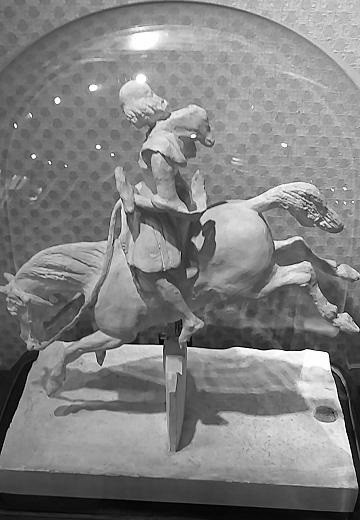
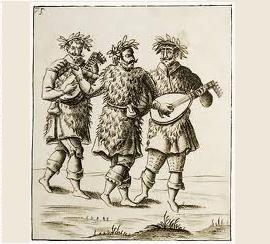
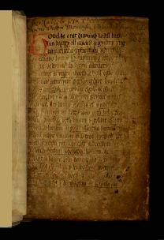
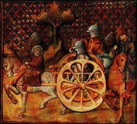
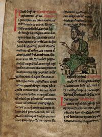

III
Merlin le Barde
Merlin the Bard
Dialecte de Cornouaille
"Merlin the Bard" also exists as a PAPERBACK in FOUR LANGUAGES
|
Il en est de même des deux morceaux communiqués par Mme de Saint-Prix (dont le nom n'est révélé qu'en 1842, dans la postface des "Contes populaires des anciens Bretons" où il précise que les strophes qu'elle lui a communiquées "ont été recueillies par elle de la bouche d'une jeune fille dans le (même) canton [de Plestin, dans le Trégor]") "J'ai été mis sur la trace du poème de Merlin par Mme de Saint-Prix, qui a bien voulu m'en communiquer des fragments chantés dans le pays de Tréguier." Cette attribution à Annaïk Le Breton, née Huon est faite par Donatien Laurent sur la base d'une étude dialectale. Ce cornouaillais mâtiné de formes léonaises se retrouve dans d'autres textes imputés par les Tables à cette chanteuse. Cependant, la présence dans la version manuscrite de ce chant (strophe 94) d'un mot très rare, "ken" dans le sens de "beau", que l'on retrouve dans le chant La ceinture (strophe 4) pourrait, tout aussi bien, faire penser à Annaïk Delliou née Olivier , à qui Mme de La Villemarqué l'attribue sans équivoque. L'autre chant, Merlin devin , qui commence effectivement par "Merlin, Merlin", et que M. Laurent croirait volontiers apocryphe, serait alors basé sur un authentique chant de la tradition orale, enseigné par Annaïk Le Breton. Selon Luzel et Joseph Loth, cités (P. 389 de son "La Villemarqué") par Francis Gourvil qui se range à leur avis, ce chant mythologique ferait partie de la catégorie des chants inventés . Cette affirmation est tout à fait contestable. Le thème de la capture de Merlin est évoqué sur une page consacrée aux contes populaires bretons relatifs à Merlin |
 Cette "Chasse au faucon" est l'oeuvre de Marie d'Orléans (1813-1839), 2ème fille du futur roi Louis-Philippe, duchesse de Wurtemberg par son mariage, en 1837. Elève d'Ary Scheffer, c'est la première femme sculpteur romantique française. |
The two fragments contributed by Mme de Saint-Prix (whose name is disclosed only in 1842, in the postface to the "Old Breton folk tales" stating that "she collected these stanzas from the singing of a girl at Plestin, in the Tréguier area" ) also refer to these poems: "I was put on the scent of the Merlin poem by Mme de Saint-Prix who was so friendly as to send me fragments of it that are sung in the Tréguier area". The ascription to Annaïk Le Breton, née Huon is justified by Donatien Laurent by means of a dialectal analysis. The Cornouaille dialect used, crossed with Leon forms and turns of phrase, is encountered in other songs attributed by the Tables to this singer. Yet, the presence in the MS version of this song (stanza 94) of the very rare word, "ken" meaning "handsome", which is also found in the song The girth (stanza 4) could hint as well at Annaïk Delliou née Olivier , to whom Mme de La Villemarqué undoubtedly refers. The other song, Seer Merlin , that really begins with "Merlin, Merlin", would then be an authentical song stemming from oral tradition conveyed by Annaïk Le Breton, though M. Laurent tends to consider it a forgery. According to Luzel and Joseph Loth, quoted by Francis Gourvil (p. 389 of his "La Villemarqué"), this mythological song was " invented " by its alleged collector. This assertion is very questionable. The motif of Merlin's capture is addressed on a page devoted to the popular tales relating to Merlin |
Ton
(Mi majeur - E major, Version modernisée de l' harmonisatiin de Friedrich Silcher, 1841 donné en fond sonore)
| Français | English | ||
|---|---|---|---|
|
I
1. - Ma chère mère (*), écoutez-moi, Je voudrais aller au tournoi. You ou you refrain You, you, ou, you, you, ou, You, you, ou, you, ou. 2. M'en aller au nouveau tournoi Qui sera donné par le Roi! 3. - A ce tournoi vous n'irez pas. Aux autres non plus, croyez-moi. 4. Vous n'irez pas, car vous n'avez Cette nuit rien fait que pleurer. 5. S'il tient à moi, vous n'irez point, Vous qui sanglotez en rêvant. 6. - Chère mère, si vous m'aimez, Vous me laisserez y aller. 7. - Vous irez peut-être en chantant, Mais vous reviendrez en pleurant! II 9. Il a harnaché son poulain Roux, l'a ferré d'acier brillant. 10. Fixé la bride à son museau; L'a couvert d'un léger manteau; 11. A son cou lui met un anneau; A sa queue lui passe un bandeau. 12. Enfin il enfourche la bête. Le voilà parti pour la fête! 13. Puis il arrive sur la lice, Alors que les cors retentissent, 14. Que tout le monde fait silence, Les chevaux piaffant d'impatience. 15. "Celui qui franchira l'enclos Du terrain de fête au galop, 16. D'un seul bond, vif, parfait et droit, Deviendra le gendre du roi!" 17. Son poulain roux, oyant cela, Hennit soudain avec fracas, 18. Bondit et se met en fureur. Ses naseaux soufflent la vapeur! 19. Et voilà que ses yeux s'éclairent, Et qu'il frappe du pied la terre: 20. Dépassanr les autres champions, Il franchit l'enclos d'un seul bond!... 21. - Vous l'avez juré, Seigneur Roi: Votre Aliénor, elle est à moi! 22. - Ma fille Aliénor, la Princesse! Vous et les gens de votre espèce 23. Les sorciers, ne sont pas, je crois, Des gendres rêvés pour un roi. - 24. Se tenait là un patriarche, Qui portait longue barbe blanche, 25. Une barbe blanche au menton, Telle la laine sur l'ajonc; 26. Revêtu d'un long vêtement De laine galonné d'argent. 27. Assis à la droite du roi, Il se penche, parlant tout bas. 28. Quand il l'eut écouté, le roi De son sceptre frappa trois fois. 29. Trois coups frappés sur la crédence Et tout le monde fait silence. 30. - Voici: la harpe de Merlin Pend à quatre chaînes d'or fin. 31. Apporte-moi la harpe qui Orne le chevet de son lit. 32. Si de ses liens tu la dépêtres, Aliénor est à toi... peut-être! - III 33. - Ma bonne mère qui m'aimez, Il faut que vous me conseilliez, 34. Ma bonne mère qui m'aimez, Car mon coeur en deux est brisé! 35 - Ah, si vous m'aviez écouté, Cela vous serait épargné... 36. Mon pauvre fils, ne pleurez pas: La harpe on la détachera. 37. Mon pauvre fils, assez de pleurs! Voici pour vous un marteau d'or. 38. Jamais rien ne résonnera Sous les coups de ce marteau-là. IV 39. - Bonheur et joie en ce palais! Je suis de retour, regardez, 40. Voilà que vers vous je reviens Avec la harpe de Merlin! - 41. Le fils du roi, voyant cela, Vint vers son père et chuchota. 42. Le roi quand il l'eut écouté, A ce jeune homme a rétorqué: 43. - Merlin porte une bague au doigt. Cette bague, apporte-la moi. 44. Apporte-moi cet anneau d'or, Si tu veux avoir Aliénor. - 45. Et bien vite, c'est en pleurant Qu'il retourne chez sa maman. 46. - Le roi m'avait pourtant promis: Le revoilà qui se dédit! 47. - Ne vous souciez pas de cela. Prenez le rameau qe voilà. 48. Ce rameau dans cette cassette Qui comporte douze feuillettes. 49. Douze feuilles, exactement, Plus précieuses que des diamants. 50.J'ai mis sept nuits à les chercher Pendant sept ans, dans sept forêts. 51. Le coq à minuit chantera, Le poulain roux vous attendra. 52. Ne vous effrayez surtout pas; Merlin le Barde dormira. 53. Comme à minuit le coq chantait, Le poulain rouge s'élançait. 54. Le coq n'avait pas achevé, Que l'anneau s'en était allé. V 55. Au point du jour, le lendemain, Il était chez le souverain. 56. Et celui-ci lorsqu'il le vit Demeura debout, interdit 57. Et tout le monde l'est autant: - Il peut se marier à présent!- 58. Et le roi un moment sortit, Son fils et le vieil homme aussi. 58. Revenant aussitôt après, Entouré des deux conseillers, 59. Le roi dit: - Mon fils, c'est bien vrai: Ma fille, tu peux l'épouser. 60. Mais j'exige une chose encor; Ce sera ton dernier effort. 61. Oui, si tu peux faire cela, Tu seras le gendre du Roi. |
62. C'est promis: ma fille est à toi;
Et tout le Léon de surcroit... 63. A quérir Merlin je t'engage Pour célébrer ton mariage. VI 64. - Barde Merlin, d'où viens-tu donc Ainsi revêtu de haillons? 65. Où donc veux-tu, Merlin, aller Ainsi, tête nue, sans souliers. 66. Où veux-tu donc aller, dis-nous, Vieux Merlin au bâton de houx? 67. - Chercher ma harpe, ce trésor Qui faisait tout mon réconfort; 68. Chercher ma harpe et mon anneau. L'un et l'autre me font défaut. 69. - Merlin, Merlin ne pleurez point, La harpe ne peut être loin. 70. Non plus que votre bague d'or. De les trouver je me fais fort. 71. Entrez Merlin, entrez ici: Mangeons un morceau entre amis! 72. - Non, je poursuivrai mon chemin Et je ne mangerai plus rien 73. Non, plus rien, tant que je ne les Aurai point, tous deux retrouvés. 74. - Merlin, Merlin, écoutez-moi, La harpe on la retrouvera.- 75. Et tant elle pria Merlin Qu'il entra chez elle à la fin. 76. Son petit fils, quand vint la nuit, S'en alla frapper à son huis. 77. Il entre et se met à trembler En regardant vers le foyer, 78. Car il y voit assis Merlin La tête inclinée sur son sein. 79. Voyant Merlin près du foyer Il ne savait où se cacher. 80. -Silence enfant, n'ayez pas peur; Je l'ai plongé dans la torpeur, 81. Grâce à trois pommes écarlates Cuites dans la cendre de l'âtre, 82. Que je lui donnais à manger: Et il nous suivra désormais.- VII 83. La reine était encore au lit Quand à sa servante elle dit: 84. - Que se passe-t-il donc en ville? Et ce vacarme, quel est-il? 85. Qui me réveille avec ce bruit Ebranlant les montants du lit? 86. Qui dans la cour acclame-t-on? Pour qui toutes ces ovations? 87. - Le peuple en liesse est rassemblé Pour Merlin qui vient au palais, 88. Précédé d'une femme en blanc, Et votre gendre le suivant. 89. Et le roi, sitôt, a bondi, Pour aller voir, hors de son lit. 90. - Lève-toi, lève-toi, crieur, Sors de ton lit, maudit dormeur! 91. Dans le pays, va publier Que tous aux noces sont conviés, 92. Aux noces de ma fille aimée Qui dans huit jours sera mariée! 93. Que prennent part aux réjouissances Les Bretons de haute naissance: 94. Gentilshommes, gens de justice, Chevaliers et ecclésiastiques 95. Et d'abord les comtes puissants, Les riches et les pauvres gens! 96. Vite, parcours tout le pays, Et reviens aussi vite ici!- VIII 97. - Ecoutez tous, si vous avez Des oreilles pour écouter! 98. Faites silence et apprenez Ce que le roi vient d'ordonner: 99. Noces de la fille du roi: Dans huit jours; vienne qui voudra! 100. A la noce, petits et grands Qui demeurez en ce canton! 1O1. A la noce, nobles Bretons, Venus de tous les horizons, 102. Gentilshommes, gens de justice, Chevaliers ou bien gens d'église, 103. A la noces, comtes puissants, Les riches et les pauvres gens! 104. Oui, car même les pauvres gens Ne manqueront d'or ni d'argent, 105. Ni de venaisons, ni de pain Ni d'hydromel, ni de bon vin, 106. Ni d'escabelles pour s'asseoir Ni de hanaps, ni de tranchoirs. 107. Il sera tué deux cents pourceaux Et deux cents gras jeunes taureaux, 108. Deux cents génisses, cent chevreuils De chaque forêt, chaque breuil 109. Et deux cents boeufs, cent noirs, cent blancs: De leurs peaux on fera présent. 110. Et pour vêtir les gens d'église Cent tuniques de laine grise. 111. On donnera cent colliers d'or Aux chevaliers... Que dire encor? 112. D'habits bleus une salle pleine Pour habiller les demoiselles. 113. Et huit cents braies neuves, vraiment, Que chausseront les pauvres gens. 114. Et cent sonneurs sur leurs coussins Jouant du soir jusqu'au matin; 115. Et dans la cour, Merlin le Sage, Qui bénira le mariage. 116. La fête sera la merveille Qui n'a jamais eu sa pareille.- IX 117. - Dites, cuisinier, je vous prie, Est-ce que la noce est finie? 118. - Oui, la noce s'est achevée, Ainsi que la franche lippée. 119. Quinze jours pleins elle a duré. Il y eut du plaisir assez. 120. Tous sont partis avec les dons Du roi et sa protection. 121. Et son gendre, pour le Léon, Avec sa femme, heureux, dit-on. 122. Ils s'en sont tous allés joyeux Seul le roi, je crois, est soucieux: 123. Merlin le Barde a disparu. Qui sait ce qu'il est devenu!- (Trad. Ch.Souchon (c) 2003) |
I
1. - My dear mother (*), I let you know That to the fair I want to go!, yoo oo yoo chorus Yoo, yoo, oo, yoo, yoo, oo, Yoo, yoo, oo, yoo, oo. 2. For there will there a new horse race By order of the King take place! 3. - Forget about this riding test I'm advising you for the best. 4. You shall not go to the new ride Because all through the night you cried. 5. You shan't go if I'm to decide For when you were dreaming you cried. 6. -Dear mother, if for me you care, You will allow me to go there! 7. -You may sing when you go thither, But cry on returning hither! II 9. Now he harnessed his red haired foal Which with bright sparkling steel he shoed. 10. He bound a bridle on its head, On its back a light cloth he laid. 11. Onto its neck he bound a ring, And around its tail a silk string. 12. And presently he was astride And off he went to the new ride. 13. And when to the lists he was shown, A blast on the bugles was blown, 14. And all the people were cheering, While all the horses were bounding. 15. "Whoever is able to bound O'er the tall fence of the fair ground, 16. Briskly, straight, neatly, without dread, The daughter of the King shall wed!" 17. The foal hears what the herald says, At the top of its voice it neighs; 18. It springs and bounds like ten devils, And fire blazes through its nostrils. 19. With anger flashing in its eyes, It pawed onto the ground likewise... 20. He soon passed all other champions, And jumped o'er the fence in a bounce! 21. - My Lord and King, you can't decline, Your daughter Linor shall be mine. 22. - Linor! Are you out of your mind? She's not for you nor for your kind!, 23. A sorcerer does not, I think, Match with the daughter of a king! 24. But now a patriarch appeared, And he wore an immense long beard, 25. A very long white beard he wore Like a bunch of wool on the moor. 26. He was clad in a woollen gown Fringed with silver all the way down. 27. He sat to the right of the King, Bent and whispered to him something. 28. The King listened to him and hit, Three times on the board with his stick. 29. Three times with his stick on the board, And all kept silent in the fort. 30. - Hark, if you bring me Merlin's harp, Fastened with quadruple gold strap, 31. If you bring this harp, as I said, That hangs at the head of his bed, 32. If you can undo the four straps, My daughter will be yours, perhaps!- III 33. - My dear mother, you are so wise, I beg you to give me advice, 34. My dear mother, if you love me, My poor heart is in agony! 35 - Why didn't you want to obey, Your heart were not in agony... 36. O, my dear son, be comforted, The golden bonds will be severed. 37. Don't cry, my son, I know better, Here is for you a gold hammer. 38. No sound is heard, whatsoever When you're hitting with this hammer. IV 39.-Hail to you, King long shall you reign! To your house I have come again! 40. To your house I'm coming in And I bring the harp of Merlin.- 41. The son of the King who had heard, Murmured to his father a word. 42. The King, silent, nodded his head, Then turned to the young man and said: 43. - If you bring me the finger band That Merlin wears on his right hand, 44. If you bring his ring to my house, Then, my dear daughter shall be yours!- 45.He left and went, crying sourly, Straight away to his dear granny. 46. -The King made a promise to me, On which he goes back presently. 47. -Do not worry and do not fear. Take the tiny twig that is here, 48. That is here in this small casket And with this twig are twelve leaflets. 49. 12 little leaves shaped like almonds That are precious as diamonds: 50. I've been seven nights on errands, Through seven years, in seven lands. 51. When the cock at midnight will sing, Your red horse will be attending. 52. And see that you are not afraid Merlin won't awake from his bed.- 53. As the cock in the dark night sang, The red foal, a flash alike, sprang. 54. The cock had not yet ceased to sing When he had taken Merlin's ring. V 55. The next day at the gloaming hour He waited in the King's parlour. 56. And, on perceiving him, the king Was awestruck and he said nothing, 57. Awestruck as all who were present; - He shall have his wife this moment!- 58. The King left for a while the board, With his son and the bearded lord. 58. And with him they came back to sight, One to his left, one to his right. 59. -What they say here, my son, is true: Today, your wife is due to you. 60. Yet, there is still one thing still I want; And that will be my last demand. 61. You succeed in doing that thing: You'll be son-in-law to the King! |
62. You'll have my daughter as your share
And the realm of Leon, this I swear! 63. You shall bring Merlin to this court, That he may marry you, in short. VI 64.-O Bard Merlin, where have you been With rags and tatters on your skin? 65. Wither do you go bareheaded Wither do you go barefooted. 66. Where are you going, are you sick,, Old Merlin, with your holly stick? 67. -I am here looking for my harp, In this world comfort of my heart. 68. Looking for my harp and my ring. Because both of them are missing. 69. - Merlin, Merlin, cheer up, cheer up, I trust you'll find again your harp. 70. Of your harp again you'll get hold As well as of your ring of gold. 71. Enter my house, enter, Merlin Eat with me something, please, come in! 72. -To go farther I won't delay, I don't want to eat on my way. 73. And I'll take no food anywhere; As long as my harp is not there. 74. -Merlin, Merlin, listen to me, Found again, your gold harp will be.- 75. And she did lure him more and more, Till at last he did pass her door. 76. And later on in the evening, The old woman's own son went in. 77. He shuddered and shivered from dread And looked at the hearth all afraid, 78. Seeing there crouching the Bard Merlin His head on his bosom hanging. 79. Seeing him crouching on the hearthstone He wondered where he could have gone. 80. -Be silent, child, don't be anxious; He sleeps fast and is not conscious; 81. Three red apples he has eaten I baked for him in my oven, 82. He has eaten my apples, and He'll follow us to any land.- VII 83. The Queen has asked her chambermaid -And she was still lying in bed: 84. -What is the matter with our town? Why all this noise, what's going on? 85. What wakes me up in the morning, The four posts of my bed shaking? 86. Who is in the yard marching on? And whom for is this ovation? 87.-All townsmen have gathered and cheer For Merlin who is drawing near, 88. Led by a hoary old woman, And your son-in-law follows them. 89. The King was still in night costume. Quick he sprang up and left the room. 90. -Stand up, stand up, my town-crier, Get off your bed, get your attire! 91. Proclaim throughout the whole land: Come to the wedding all who want! 92. In a week will be the wedding Of the dear daughter of the King! 93. Come to the wedding, noblemen Of Brittany from end to end, 94. All noblemen and men of laws, Clergymen and knights, my fellows, 95. Furthermore, every mighty count... The wealthy and the indigent! 96. Quick, travel my land up and down, Crier, then return to this town!- VIII 97. Be silent everybody here, Whoever had two ears to hear! 98. -Oyez, listen and you will know That our King has passed a new law: 99. To the wedding of His daughter : In eight days may come whoever 100. Lives and is dwelling in this shire! Come to the marriage all who care! 1O1. Come to the wedding, noblemen, From Brittany, from end to end, 102. All noblemen and men of law, Clergymen and all King's fellows, 103. Furthermore, every mighty count, The wealthy and the indigent! 104. Wealthy and indigent alike Of gold and of silver won't lack, 105. Nor won't they lack of meat and feed Nor won't they lack of wine or mead! 106. Nor of wooden stools to sit on Nor of nimble lads to serve them. 107. Two hundred pigs shall be slaughtered And two hundred steers, well fattened, 108. Two hundred heifers, hundred roes From all the forests, all the woods. 109. Hundred white, hundred black oxen: Their hides will be distributed. 110. Of white wool hundred robes of feast That will be given to the priests. 111. And hundred chains made of gold links That will be given to the knights. 112. And blue gowns, a room is full with, To be given to the ladies. 113. And eight hundred breeches or more To clothe the indigent and poor. 114. And hundred musicians that will sing And play morning, noon and evening; 115. And in the yard, the Bard Merlin, Who has come to bless the wedding! 116. In brief, a feast like none before And there will be such feast no more.- IX 117. -Listen, cook, listen, if you please, Did now the wedding feast cease? 118. -The wedding is over, indeed And no wine is left and no feed. 119. It has lasted for a fortnight. The days we spent were gay and bright. 120. All are gone, each with some present And with the King's help and assent. 121. His son-in-law led to Léon, His wife with great satisfaction. 122. All are gone mirthful and laughing, All are happy, except the King; 123. Merlin, again, left him alone. And nobody knows where he's gone!- (Translated by Ch.Souchon (c) 2003) |
|
(44) Ma mère, voici ce qu'a dit le seigneur roi, ce fieffé menteur: le roi m'a dit d'aller chercher l'anneau de Melin . Le roi avait juré, en vérité, que j'aurais sa fille pour épouse, dès lors que j'aurais détaché la harpe. Le roi l'a juré, vraiment, et le voilà qui se dédit! (62) Tu auras ma fille et de plus, tout le pays de Vannes , je le jure sur ma tête. (64) Melin, Melin où allez-vous avec vos habits percés des deux côtés? Pauvre Melin, où allez-vous avec vos braies souillées de cendres ? (66) (...je m'en vais) quérir quelque part ma harpe, chercher quelque part ma harpe qui valait son pesant d'argent blanc et d'avantage. (77) Et en l'entendant ronfler , Le garçon fut tout effrayé. (84) A quoi jouent les gens de la ville, qu'il y ait tant de bruit dans Quimper ? (87) Il n'est rien arrivé de nouveau, si ce n'est que Merlin est arrivé et il a deux chevaux pour tirer sa charrette jusqu'ici, deux chevaux harnachés de façon resplendissante, l'un noir, l'autre blanc. (88) L'un est au garçon qui a gagné votre fille comme épouse, l'autre à sa mère une vieille femme vêtue de blanc. (89) ... -Salut à vous, Sire le Roi! Me voici de retour. J'aurai votre fille, cette fois! La bonne fortune suit toujours la mauvaise, tout comme les feuilles vertes suivent les feuilles sèches, et les baies rouges les épines noires qu'on écrase. Toute chose obéit à sa loi: après l'hiver vient le printemps. Après l'été viendra l'hiver. (116) ... Venez y tous, petits et grands, pour mettre le clé à sa place. Venez-y tous, la femme et l'homme, pour mettre la clé dans le trou de la serrure ! (119) Une quinzaine de jours durèrent les festivités du mariage. Quand arriva le mercredi, quel beau spectacle c'était aux alentours de Quimper, que, l'une près de l'autre, toutes ces maisons pleines de gentilshommes, les maisons regorgeant d'humains et les écuries de chevaux, et toutes ces marches qui tremblaient au passage de tous ces gens; que ces rues étincellantes de l'or jaune et scintillantes de l'argent blanc qui ornaient les habits des chevaliers, avec leurs manteaux de laine rouge et bleue, portant chacun une épée nue; certains avec des colliers au cou, d'autres une armure sur le dos. Et, d'un bout à l'autre, des colliers, comme il sied à des chevaliers. Ils faisaient tant de bruit dans la ville, que toutes les maisons tremblaient, ainsi que les deux monts de Quimper. (121) Raffelik est parti pour Vannes, aussitôt suivi de la fille du roi et de sa vieille mère (*). (*) "Mamm gozh" signifie normalement "grand'mère", mais dans cette histoire, cette expression signifie partout "vieille mère", semble-t-il. |
(44) Mother, hear what this damned liar of a king told me: to go and fetch Melin 's ring. And yet he had sworn, that I would have his daughter to wife, if I unchained the harp. He swore it, he did! But now, for shame, he is going back on his promise! (62) You shall have my daughter, as well as the whole district of Vannes , I swear it, by my head. (64) Melin, Melin, where are you going? You have clothes with holes in them on both sides! Poor Melin , with your breeches all soiled with ashes ! (66) (...I am going) in quest of my harp that must be somewhere, of my harp that was worth its weight in white silver , if not more. (77) And as he heard him snore , The lad was frightened. (84) What's the matter with the town people? All Quimper is full of noise! (87) Nothing in particular, except that Merlin is here and he's got two horses to draw his cart hither, splendidly harnessed horses. One white, the other black. (88) One belongs to the lad who won your daughter to wife, the other to his mother , an old woman cled in white. (89) (...) Good health to you, your Majesty! I am back here and now, I shall have your daughter! Good luck always comes after bad luck, as green leaves after dead leaves, as red berries after black thorns whereon you tread. Everything is suject to its own rules: after winter comes spring time. After summer comes winter time. (116) Come on, everybody, of lowly or of high birth, come on, men and women alike! Come, all of you and help put the key into the keyhole! (119) For a fortnight or so did the wedding feast last. On the agreed Wednesday, what a treat it was to see in Quimper and thereabouts all those houses full of gentlemen, lodgings full of people, stables full of horses; with the stairs trembling under the footsteps of the crowd; all those streets sparkling with the yellow gold and the white silver adorning the clothes of the knights with their coats of red or blue wool and a glittering blade hanging from the side of each of them. Some had heavy gold chains around their necks, others armours on their backs. All of them had necklaces, as is becoming to knights. And all of them were so loud that all houses quivered and so did both mounts of Quimper town. (121) Raffelik has left for Vannes, soon followed by the king's daughter and his old mother (*). (*) Bret. "mamm gozh" usually means "grandmother". In the present case, it means throughout "old mother", apparently. |
Texte Breton (imprimé et manuscrit)
Printed and handwritten Breton text
"

|
Un texte remarquable du Barzhaz
Ce chant se présente comme une pièce de théâtre en 9 actes, alternant avec adresse les dialogues et les descriptions. Que l'attention de l'auditoire soit maintenue en éveil tout au long de ces 123 couplets est la preuve du réel savoir-faire de l'auteur de cette histoire de sorciers (tout à fait comparable à des productions plus récentes). M. Donatien Laurent a, comme on l'indique par ailleurs, étudié et déchiffré les carnets de collecte de la Villemarqué et publié en 1989, sous le titre "Aux source du Barzaz Breiz", le résultat de ses investigations relatives au premier carnet portant sur la période 1834-1840. Cette collection se distingue des recueils équivalents tels que les "gwerzioù" de Luzel , parce que, outre les chants populaires pleins d'incohérences et d'emprunts au français, on rencontre dans ces manuscrits quelques textes qui par leur sujet, leur langue et leur forme, tranchent radicalement sur ceux dont les autres collectes abondent. S'ils sont authentiques, cela modifie l'image que nous avons de la tradition populaire, de sa diversité géographique et sociale et de l'évolution de son contenu au cours du temps. Merlin le Barde est de ceux-là et possède avec deux autres chants (le Faucon et les Chouans) la particularité de n'exister dans aucune autre collection, même sous forme fragmentaire. Aussi les détracteurs du Barde, Luzel en tête, l'ont-ils, rangé dans la catégorie des pièces entièrement fabriquées. Ce poème, ainsi que le précédent, Merlin devin, figurent au recueil dès la première édition de 1839 (les deux autres parties du cycle, Merlin au berceau et la conversion de Merlin, n'y entreront qu'en 1867). Comparé au texte imprimé, il manque au manuscrit de Merlin-Barde les 82 premiers vers comme la logique interne du poème le prouve. On y raconte comment Merlin se fait subtiliser par Raffélik, fils d'une magicienne qui utilise les artifices de sa mère, tour à tour, sa harpe et son anneau, avant de devenir son prisonnier. Cette pièce a une longueur inhabituelle. Dans la "Notice au Comité historique des sciences littéraires" qu'il rédigea en 1838 à l'intention du futur ministre de l'instruction publique A. Villemain, La Villemarqué indique que ce poème "est un des plus longs que j'aie recueillis: il fait 500 vers " . Bien qu'il ne nous en reste que 252, un rapide calcul permet de vérifier que ce chiffre doit être exact. Le manuscrit restant et le texte imprimé se rejoignent à la strophe 44. Les "fragments" reçus de Mme de Saint-Prix Dans les notes qui suivent le texte, on trouve dès 1839, cette indication de La Villemarqué: "J'ai été mis sur la trace du poème de Merlin par Madame de Saint-Prix qui a bien voulu m'en communiquer des fragments chantés au pays de Tréguier". Ces fragments existent dans les carnets, écrits de la main de cette dame, sous forme d'une feuille double pliée glissée entre deux feuillets. En voici la teneur:
Un second "fragment" pourrait être L'invitation aux noces notée dans le 1er carnet de Keransquer, pp. 201 et 202, identique à un ou deux mots près à une chanson du manuscrit Saint-Prix de Landévénec et sa copie dans la collection de Penguern (T. 92, 115, "Bonjour a joa barz an ti-man"). Quatre vers de ce texte se retrouvent dans le "Merlin" de Keransquer. Le thème de l'homme sauvage  Ce texte cite d'abord deux couplets d'une chanson (lignes 3 à 6) qui sera notée par Luzel en 1863, et dont il fait suivre un résumé (lignes 7 à 9). Un roitelet capturé par un promeneur prend la taille humaine lorsqu'on l'immole après l'avoir engraissé. Ces deux couplets se retrouvent, sous une forme presque identique, dans une autre chanson originaire de Guéméné , où l'écureuil remplace le roitelet. M. Donatien Laurent indique qu'il s'agit du thème de l'homme sauvage , celui d'un conte bien identifié dans les classifications d'Aarne et Thomson, (ou de Paul Delarue et Marie-Louise Tenèze, pour la France), dont les versions bretonnes sont souvent associées au personnage de Merlin. Dans trois des versions bretonnes du conte type 502, l'homme sauvage est remplacé par un oiseau, appelé Merlin dans l'une d'entre elles recueillie par F. Cadic en Morbihan. C'est le statut, mi-homme, mi-oiseau qu'avait ce mythique homme sauvage dans la littérature celtique insulaire ancienne et que la tradition orale bretonne lui a, semble-t-il, conservé.On remarque que le début "Merlin, Merlin où allez-vous, You! You!" , sert de début et de refrain au chant précédent "Merlin - Devin" , publié lui aussi en 1839, mais qui n'est pas cité dans la "Notice au Comité" de mars 1838 et dont l'équivalent manuscrit manque dans le carnet de collecte. Ce vers est cité dans le présent poème à la strophe 64. La suite (lignes 10 à 68) est un résumé un peu décousu de "Merlin-Barde" avec beaucoup d'omissions et des différences frappantes: un violon au lieu d'une harpe, d'autres pratiques magiques qui font intervenir un bosquet de sureaux et le nombre "cent". Le passage de ces fragments à l'imposant poème final serait-il le fruit de l'imagination du collecteur? Une enquête digne de Sherlock Holmes Donatien Laurent par l'étude très minutieuse qu'il fait du manuscrit de Berlin-Barde montre clairement que cette hypothèse n'est pas défendable: Principales différences entre manuscrit et texte publié Si La Villemarqué a fait preuve de sagesse en supprimant l'essentiel du discours du roi qui est repris par le messager, il a été moins bien inspiré dans d'autres cas: Ce texte a un équivalent dans un autre chant du carnet n°1: Ar Minour . Il convient ici de remarquer que la description du mariage telle qu'elle est faite aux strophes 102 à 115, se retrouve, presque mot pour mot, dans l'ouvrage publié par La Villemarqué en 1859, "La légende celtique en Irlande, Cambrie et en Bretagne" (pages 241 et 242). Elle sert à relater les noces des parents de Saint Hervé, Hyvarnion et Rivanone et il est dit, là encore, sans plus d'explication, "que le fameux Merzin célébra le mariage, quoi qu'il en soit d'un honneur qu'une autre tradition populaire paraît revendiquer, avec plus de raison, pour les héros d'une autre légende du même siècle." C'est Geoffroy lui-même qui introduisit la graphie "Merlin" (sous sa forme latine "Merlinus") dans son "Histoire des rois de Bretagne". Il le fit à propos de l'"épisode de la Tour", emprunté à l'"Histoire des Bretons" de Nennius et dont le héros est un jeune voyant nommé "Ambroise ou Emrys Gwledig, fils d'un consul romain". L'histoire de la Tour est reprise et développée par Geoffroy, mais il l'attribue à Merlin en disant qu'Ambroise est l'autre nom de ce sage (chapitre 108). Cependant le nom de Merlin n'a pas été inventé par Geoffroy comme l'affirme E.K. Chambers dans son "Arthur de Bretagne", Londres, 1927. De nombreux éléments suggèrent une tradition antérieure, orale ou écrite. Comme La Villemarqué lui-même l'indique, "Merlin" pourrait être l'adaptation du nom du barde gallois Myrddin qui vécut au 6ème siècle. Archaïsmes du manuscrit Pour asseoir leur conviction que le chant du Barzhaz était apocryphe, ses censeurs ont relevé de grosses erreurs de langage. Mais ces fautes ont été commises par l'éditeur La Villemarqué, non par le collecteur, ni par l'interprète du chant. Bien plus, ce texte comprend des archaïsmes qui en attestent l'authenticité: Les rapports entre Merlin et le roi  On constate une coïncidence frappante entre les deux précieux objets dont le roi tente de priver Merlin dans ce récit et les attributs qui sont ceux du Barde de la Cour (bardd teulu) tels qu'ils sont décrits par les lois galloises de la fin du Xème siècle, connues sous le nom de "Lois de Hoël-le-Bon" (Laws of Hywel Dda).Toute une section de ce code est consacrée aux lois de la Cour galloise. Elle fixe l'ordre de préséance, le rang, les titres et les obligations de chaque personnage de la Cour et fixe un tarif d'amendes, en réparation des offenses, en fonction du rang de l'offensé, qui se substitue au système de châtiments corporels institué par les Normands en 1066. Après avoir traité le cas du Fauconnier, du Grand Palefrenier, du Grand Veneur et de l'Intendant de la Maison de la Reine, on en arrive au Barde de la Cour: "Il lui revient un bœuf prélevé sur le butin des expéditions auxquelles il aura pris part, plus une part individuelle du butin comme tous les autres membres de la cour. En contrepartie, il est tenu de les précéder et de chanter l'hymne 'Monarchie de Grande Bretagne' (Unbeneath Prydain) lors des batailles et des combats... Il siège juste à côté de l'Intendant de la Maison du Roi. Il reçoit du prince (teyrn) une harpe et de la reine un anneau d'or" et il ne devra jamais s'en séparer." Ce sont les deux attributs du Barde Merlin dans la ballade bretonne, dont le roi fait en sorte de dépouiller leur détenteur. Ce fait est relevé, dès 1839, par La Villemarqué lui-même, qui cite les "Lois de Hoël-Da" d'après les douteuses "Myvyrian Archeologiae" . Ces rapports entre le roi et son barde sont aujourd'hui authentifiés pour nous par la Vita Merlini ( de Geoffroy de Monmouth -1148) qui venait juste d'être publiée à Paris et par divers textes insulaires non encore connus en France à cette date (Vie de saint Kentigern, Poèmes gallois, saga de Suibhne). Conclusion L'indication de la Dame de Nizon qui attribue dans la première table "le chant Merlin" à la vieille Annaïk Huon ép. Le Breton (1759 - 1839), une mendiante de Kerigasul en Nizon, pourrait bien concerner ce texte, compte tenu des particularités dialectales qu'un celtisant averti peut y relever. En définitive, il est bien difficile de ne pas se rallier au diagnostic de Donatien Laurent: la confrontation entre texte imprimé et manuscrit montre que ce dernier a été traité selon les principes dont La Villemarqué revendique la légitimité: Toutes les informations ci-dessus sont tirées de: "Aux sources du Barzaz-Breiz" de Donatien Laurent - Editions ArMen - 1989. |
An outstanding text in the Barzhaz
The present song is like a theatre play in 9 acts, with a skilful alternation of descriptions and dialogs. That the audience's attention is kept alert all along its 123 verses is the proof of the thorough know-how of the author of this story of sorcerers (which could perfectly be compared with more recent productions). M. Donatien Laurent , as mentioned elsewhere, investigated and deciphered La Villemarqué's collecting notebooks and published in 1989 the result of his exertions concerning the first one covering the period 1834 - 1840, in a book titled "The sources of the Barzaz Breiz". La Villemarqué's collection of MSS, as compared with similar works, e.g. Luzel 's "Gwerzioù", contains, beside the same folk songs full of inconsistencies and French loanwords, certain texts, whose topic, quality of language and structure raise them far above the songs that abound in the other collections. If they prove to be authentic, our conception of folk tradition, its geographical and social variety and development in the course of centuries, must be thoroughly changed. "Merlin the Bard" is one of these texts and has, along with "The Hawk" and "The Chouans", a special feature: it is to be found nowhere else, even as a fragment. That is the reason why other collectors, Luzel in the first place, dismissed it as a forgery from end to end. This poem and the foregoing, "Merlin the Seer", are included in the first 1839 edition of the Barzhaz, whereas the other two parts of the Merlin cycle, "Merlin in his cradle" and "Merlin's Conversion" were to enter it only in 1867. When comparing this Ms with the printed text, the certitude that the first 82 stanzas are missing, is supported by the internal evidence of the poem. The Ms recounts how Merlin is robbed by Raffelik, the son of a fairy who avails himself of her magic tricks, of his harp, then of his ring, and is eventually captured by him. This ballad is exceptionally long. In the "Notice for the Historical and Literary Committee which he wrote in 1838 to be sent to the Minister of Education, A. Villemain, La Villemarqué states that this ballad "is one of the longest I collected: it is 500 lines long ". Though only 252 lines are left in the copybook, rough reckoning confirms that this figure ought to be correct. The extant Ms and the printed text coincide, starting from stanza 44. The "fragments" received from Mme de Saint-Prix In his "Notes" following the text in the 1839 Barzhaz , La Villemarqué states: "I was put on the scent of the Merlin poem by Mme de Saint-Prix who was so friendly as to send me fragments of it that are sung in the Tréguier area". These fragments are found in the copybooks in this lady's handwriting on a two-folded double sheet tucked between two leaves. It reads as follows:
A second "fragment" could be The invitation to the wedding recorded in the first Keransquer notebook, pp. 201 et 202, identical but for a few words with a ditty in the Saint-Prix MS kept at Landévénec and a copy thereof in the de Penguern MS collection (Book 92, 115, "Bonjour a joa barz an ti-man"). Four lines of these lyrics appear in "Merlin"'s Keransquer version. The theme of the "wylde man" The above text first (lines 3 to 6) quotes two stanzas from a song that will be later on collected by Luzel in 1863, a résumé of which follows in lines 7 to 9: a wren captured by a stroller assumes a supernatural size after it was crammed and slaughtered. These two stanzas are found in an almost identical form in another song from the Guéméné area , where a squirrel has replaced the wren. M. Donatien Laurent remarks that this theme is known as the "wylde man" or "homo salvaticus" theme , classified under N°502 in the French equivalent set up by Paul Delarue and Marie-Louise Tenèze of the Aarne and Thomson index of popular tales. The Breton versions of this tale often involve the figure of Merlin. In three of them the sacred fool is replaced by a bird, and in one of them, collected by F. Cadic in Morbihan, this bird is called Merlin ("merle" is French for "blackbird"). Being half bird, half man, was the status of the mythological figure in the insular Celtic literature of old, which was, apparently, kept intact in the Breton oral tradition. It is noticeable that the first lines "Merlin, Merlin, whither now? Yoo, yoo!" provide its first verse and chorus to the previous song " Merlin the Seer ", which was also published in 1839, but was not mentioned in the "Note for the Committee" dated March 1838 and has no equivalent in the Ms collection. The same burden is quoted in the present poem in stanza 64. The rest (lines 10 to 68) is a somewhat incoherent résumé of "Merlin-the-Bard" with lots of omissions and evident differences: a fiddle for a harp, different magic tricks involving an elder grove and the figure "a hundred". Are we indebted to the collector's fancy for the change from these fragments to the stately final ballad? That is the question. An inquiry in Sherlock Holmes' fashion Donatien Laurent, as a result of a painstaking analysis of the Merlin-The-Bard MS clearly proves this hypothesis to be unsustainable: Main differences between MS and printed ballad La Villemarqué was certainly well-advised to skip most of the king's speech which is repeated by the messenger. But he was ill-advised in several other cases:  It is noticeable, in this context, that the description of the wedding which we read in the stanzas 102 through 115, is found almost literarily copied in the book published by La Villemarqué in 1859, "Celtic Legends of Ireland, Wales and Brittany" (pages 241 and 242). This passage is used to relate the wedding of Saint Hervé's parents, Hyvarnion and Rivanone, and, here too, the author ingeniously states: "It was the famed Merzin who blest the union, even if this honour is claimed by another tradition, perhaps with more pertinence, for the heroes of another legend dating back to the same century." It was Geoffrey himself who introduced the spelling "Merlin", (in the Latin form "Merlinus") in his "Historia Regum Britanniae". He did it in connection with the "story of the Tower", featuring a young seer, named "Ambrosius" or "Embreis Guletic, son of a Roman Consul" recounted by his model, Nennius, in his "Historia Brittonum". The tower story is repeated and embellished by Geoffrey of Monmouth in his own "Historia", though he attributes it to Merlin, saying "Ambrosius" is the sage's alternate name (chapter 108). But the name Merlin was not invented by Geoffrey, as E.K. Chambers asserts in "Arthur of Britain", London, 1927. There are many indications that there was a pre-existing oral or written tradition. As stated by La Villemarqué himself, Merlin could prolong the name of the Welsh Bard Myrddin who lived in the 6th century. Archaisms in the Ms In support of their assertion that this Barzhaz ballad be a fraud, its disparagers have pointed out blatant grammatical mistakes. But these shortcomings are attributable to La Villemarqué as an editor, not as a collector. Moreover the collected song features archaisms that attest to their authenticity: Merlin's relationship to the king  There is a striking coincidence between the two precious attributes of which the king endeavours to rob Merlin in this tale and the attributes of the Bard of the Household (bardd teulu) as set down in the late 10th century laws known as the "Laws of Hywel Dda" (Howel the Good).A whole section of this codex is dedicated to the laws of the Court of Wales. It sets down the order of precedence, ranks, titles and obligations of each person of the royal household. It establishes a tariff of fines to be paid according to the rank of the offenced person, instead of the corporal punishments instituted by the Normans in 1066 After the Falconer, the Chief Groom, the Chief Huntsman and the Steward of the Household to the Queen, the Bard of the Household is dealt with: "He shall receive a steer out of every spoil at the capture of which he shall be present, and one man's share like every other man of the household. Therefore he shall sing the 'Monarchy of Britain' (Unbeneath Prydain) in front of them in the day of battle and fighting... He sits second nearest to the chief of the household. He has a harp from the prince (teyrn), and a gold ring from the queen, when his office is given to him; and the harp let him never part with." These are the very attributes of Bard Merlin in the Breton ballad, of which the king deprives their possessor. This fact did not escape La Villemarqué who quotes the "Laws of Hoël-Da" in 1839, after the (partly) spurious "Myvyrian Archeologiae" . This relationship between the king and his bard are authenticated for the modern reader by (Geoffrey of Monmouth's) Vita Merlini (1148) who had just been published in Paris in 1838 and other British texts that were unknown in France at the time: Life of Saint Kentigern, Welsh poems, Saga of Suibhne. Conclusion The statement of La Villemarqué's mother ascribing in the first table "the Merlin song" to old Annaïk Le Breton née Huon (1759 - 1839), a Nizon beggar woman, applies very likely to this text, judging from the dialectal idiosyncrasies which a trained Breton speaker will detect. When all is said and done, it is difficult to reject the conclusion of Donatien Laurent's study: when collated with the printed text, the Ms appears to have undergone a metamorphosis based on principles which La Villemarqué claimed to be legitimate: Most of the information above is derived from: "Aux sources du Barzaz-Breiz" de Donatien Laurent - Editions ArMen - 1989. |
CHANTS APPARENTES - RELATED SONGS
Al Laouenan - 1ère mélodie
Al Laouenan - 2ème mélodie
Al Laouenan - 3ème mélodie
Al Laouenan - 4ème mélodie (texte complet)
Ar c'hazh koad
Bonjour ha joa barzh ar ger-mañ (Invitation aux noces)
Bal ar venec'h ruz (Bal des moines rouges)
|
|